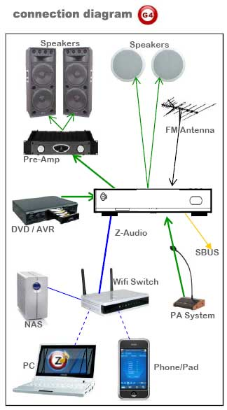
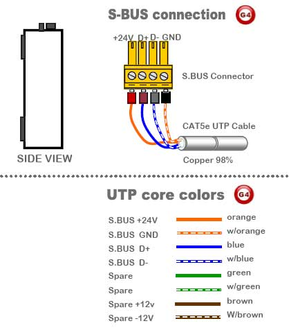

Smart-Bus Zone-Audio 2C (G4) - SB-Z-AUDIO2C
GTIN (UPC-EAN): 0610696254580
Description
Distributed Audio Zone Player and Amplifier. Can Deliver up to RMS 48 Watts of Stereo. With Balanced Out to connect to Pre-Amplifier Booster. With Built in FM Radio Tuner, Built in SD Card Reader slot. Can Stream Digital Audio Through LAN/FTP from any PC or NAS on the Network. Advanced PA Port that can detect Audio Announcement
Automatically mute current playing source, announce then switch back to the same music source again once announcement is completed. Additional RCA Stereo Input fro Direct Local Source Feed to allow local Music ports to connect direct from TV,DVD, IPod Dock or any other Source. Software Controllable and Integration Protocol
ready.
*Can be Manually Programmed by any Person on site Manually as DIY". (Maximum 1470 Zones System)
Iphone Screens for control of Z-Audio


Specifications
Output Terminals
2 x Amplified Speaker Out
2 x Balanced Speaker Out
Maximum Output Power
50 watts: 25W Right & 25W Left
Control IO
1 x Advanced RS485 S-BUS
1 x LAN communication & FTP
1 x RS-232 Integration Port
1 x IR receiver Port
Playable Input Sources:
1 x SD CARD Reader (Built-in)
1 x Stereo Audio In (RCA)
1 x Stereo PA in (Auto Detect)
1 x Streaming Media via LAN
WHY G4 (GENERATION-4) IS BETTER? ZONE-AUDIO
Zone Audio |
Old Smart-BUS |
New S-BUS G4 |
Din Rail , Table top or Wall Mountable Installation |
Wall Only |
All Possible |
All Connection Ports Organized at Back |
Scattered around |
Organized |
Elegant Easy Standard Cable connectors Used |
Confusing |
Easy |
Public Announcement Auto Detect and Announce |
Not Possible |
Available |
Auto Update of SD Card Play list and song Data Direct on Insert |
Not Available |
Available |
Integrate Fully to DDP, HAC, Android, Win CE |
Not Available |
Available |
Simple I phone and I pad Software Availability |
Not Available |
Available |
No Need To Connect to Network To Start Radio |
Not Available |
Available |
Easy Backup and Restore using Configuration SW |
Not Available |
Available |
Work on Both BUS and Cloud Technology |
Not Possible |
Possible |
Programming and Pairing Manually to DDP |
Not Possible |
Easy |
well designed Air cooling Vents at Back and front and Side of Module |
Standard |
Advanced, Double efficiency |
RS-232 Port ready for Third Party Integration |
Not Possible |
*Possible |
Lighter and More Elegant Design, with Power Button and IR Remote Functionality as Stand alone |
Not Available |
^Available |
Genuine Patent and Brand Embedded into all Parts and Plastics |
Not Available |
Available |
Genuine Product Barcode GTIN, and Holographic Label Distinguisher |
Not Available |
Available |
All Other Standard Smart-BUS Advanced Automation Features |
Included |
Included |
Q. How many z-audio units we can connect in smart bus network?
A. Z-Audio2 is an IP based and also is smart-bus G4 enabled , thus you can connect 1470 devices easiely . .
Q. Can we use the FTP function in the z-audio without inserting SD card?
A. Yes, the New G4 Series has enabled full control of all different Sources even if No SD Card is available. However, we always Prefer the SD card to be inserted to make the process of Source selection faster and avoid detection Time.
Q. Can we play the same music in the whole home for diffrent z-audio (Party Mode for Example: Same song and Different Zones?)
A. Yes you can do that when Playing FTP or when same source is connected to PA or Audio In. of all Zones. Also can do it using the PLM softwre, or The App installed in the iphone for FTP and source control.
Q. Is the z-audio PA is stereo ?
A. yes the PA paging function of z-audio G4 is stereo .
Q. can we control many z-audio from 1 DDP panel?
A. This is Tricky question, partially yes: because you can control several Z-Audio2 devices by using scene like all off and so on, but you can control full function to only 1 z-audio from 1 DDP only to select songs album, read tacks and so on.
Q. How many Z-Audio totally separate zones can be added to Smart-BUS Network?
A. you can add up to 1470 Distributed Audio Zones in sbus Network
Q. How Many zones is one Z-Audio and what does it include?
A. One Z-Audio is one one Zone, it is designed to expand by adding single zone at a time as to be needed in easy and economical way. Each zone has built in Amplifier that supply RMS 25W x 2 Channels = total of RMS 50 watts. Or total of 100Watts under commercial rating standards. Each zone also include SD card MP3 Player and card slot, FM Radio Tuner and antenna slot, LAN FTP streaming audio with RJ45 jack slot, Audio IN with stereo RCA Jack slots (to act as local source interrupt), PA (Public addressing Broadcast Audio) with dual RCA jacks, RS-232 (9Pin female plug) fro 2-way integration to 3rd party, IR receiver Port for Remote control commanding if used in living room next to DVD, It also Include a buit in Balanced Audio out (To connect to preamplifiers fro additional Powering of big multi range speakers like Disco, Garden, Hotel Lobby ++)
Q. Can we control Z-Audio using PC?
A. Yes, you can control Any Z-Audio within the SBUS Network using your pc utilizing our ready software or any third party. (our ready software are: HAC, Mazarati, PLM) Note: only PLM allow you to send PC stored music to any selected Z-Audio2 zone or Group.
Q. Do you have telephone Apps ready for controlling of Z-Audio2?
A. yes, we have Iphone/Ipad App, and we have the Android App.
Q. What can we control using Z-Audio2 I.Phone App?
A. ZA-App gives you the Power to select music from 5 different sources per zone: Radio, SD Card, NAS HDD or PC, Local Audio IN, or your phone stored Music. Also, it allow you to select the Playlist, the song, the queue, add song or delete or modify play order within queue. AZ-App also give full control ability to play, pause, FW to next track, BW to previous track, control volume, or stop and power off the Z-Audio. New Group control Feature is added for Parties enabling selection of Multiple Zones and grouping them as one to synchronize playing song, queue and volume level. Moreover, ZA-App allow the user to record and to send broadcast Audio Announcement from his hand held telephone onto the selected Zone or Group.
Q. Where can we install Z-Audio2?
A. you can install Z-Audio2 near DVD in any room, you can install it also centrally in control room, or can install it directly near Speaker above ceiling using the same speaker opening as sliding space to mount the Z-Audio2 module.


TECHNICAL DATA:
Function: Output Terminals Maximum Output Power Control IO Playable Input Sources: User Controls Programming Compliance |
Presets & Prompts Installation Power Supply Advanced Features Operating Environment Enclosure & Size Dimensions & Weight |
Applications
• Homes
• Hotels
• Restaurants
• Luxury Boats
• Schools
• Factories
• Prayer Halls
• Commercial centers